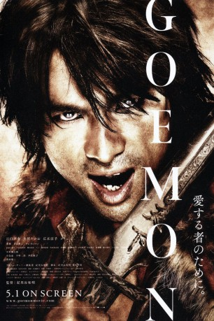

#4054 The Legend of Goemon
Alternativ: Goemon
 
 IMDB-Wertung: 6.7 / 10
IMDB-Wertung: 6.7 / 10  Metascore: 0
Metascore: 0 
Japan im Jahr 1582. Der vom Volk geliebte Meisterdieb Ishikawa Goemon (Yosuke Eguchi), eine Art japanischer Robin Hood erleichtert machtgierige Adelige um ihr Hab und Gut, um es den Ärmeren im Volk zu geben. Bei einem seiner tollkühnen Raubzüge stiehlt er eine wertlos anmutende Box ohne zu wissen, dass diese Büchse der Pandora das Schicksal des gesamten Landes beeinflussen kann. Kurz darauf scheint ganz Japan in Aufruhr und Goemon sind Heerscharen grausamer Ninja-Krieger auf den Fersen. Prinzessin Cha Cha - die sich in ihn verliebt - versucht ihm zu helfen, seine Mission dennoch zu erfüllen. Imposante Verfolgungsjagden über die Dächer der Stadt, große Schlachten à la „300“, tanzende Leder-Geishas und eine völlig entfesselte Kamera machen THE LEGEND OF GOEMON zu einem unvergesslichen Meilenstein des Genres.
Jahr: 2009
Dauer: 127 Minuten
FSK: 16
Land: Japan Studio: Splendid FilmTonspuren:
Untertitel: Deutsch,
Auflösung: 1080p (1920x816) Größe: 6584 MB
Genre: Action, Drama
Regisseur: Kazuaki Kiriya
Drehbuch: Ji-hie Eun
Soundtrack:
Darsteller:
- Mayumi Sada als Orin
 Yôsuke Eguchi als Goemon Ishikawa
Yôsuke Eguchi als Goemon Ishikawa- Takao Ohsawa als Saizo Kirigakure
- Ryôko Hirosue als Chacha Asai
- Jun Kaname als Mitsunari Ishida
- Gori als Sasuke Sarutobi
- Mikijirô Hira als Rikyu Sen
 Masatô Ibu als Ieyasu Tokugawa
Masatô Ibu als Ieyasu Tokugawa- Tetsuji Tamayama als Matahachi
- Hashinosuke Nakamura als Nobunaga Oda
- Eiji Okuda als Hideyoshi Toyotomi
- Choi Hong Man als Gao
- Susumu Terajima als Hanzo Hattori
- Eriko Satô als Courtesan Yoshino
 Erika Toda als Courtesan Yukiri
Erika Toda als Courtesan Yukiri- Mayu Tsuruta als Koheita's mother
- Ryô als Goemon's mother
- Ema Fujisawa als Okichi
- Arashi Fukasawa als Koheita
- Mayuko Fukuda als Chacha - teenage
- Ryohei Hirota als Goemon - teenage
- Tokimasa Tanabe als Goemon - youth
- Takeru Satô als Saizo - youth
- Yoshikazu Ebisu als Owner of Sobaya
- Naomasa Musaka als Kinokuniya Bunzaemon
 Fumiyo Kohinata als Yashichi
Fumiyo Kohinata als Yashichi- Ryôhei Abe als
- Gibson als
- Yûki Ishida als
- Kazuaki Kiriya als Mitsuhide Akechi
- Shôken Kunimoto als
- Lina als
- Shôichirô Masumoto als
- Akihiko Muramatsu als
- Taishin Ohtsuka als
- Udo Suzuki als
Datei: X:\HD-Eastern-Classic(A-M)\Legend of Goemon, The (2009, FSK16, 1920x816).mkv seit 16.07.2016
Festplatte: HD Eastern+Western
 Es gibt insgesamt 63 Filme in der Gruppe 'HD-Eastern-Classic(A-M)'
Es gibt insgesamt 63 Filme in der Gruppe 'HD-Eastern-Classic(A-M)'